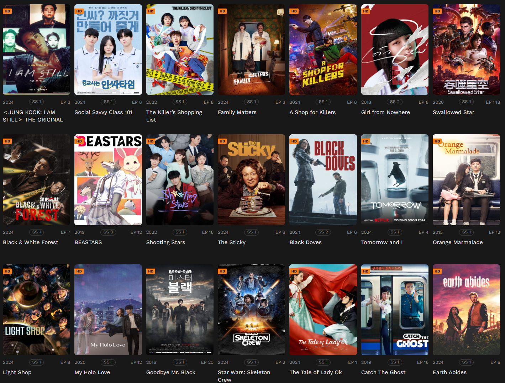

KissKh - Stream HD K-Dramas & Asian Dramas with English Subtitles
- KissKh live
- KissKh TV live
- KissKh Official live
KissKh is a leading platform for drama lovers, offering a vast collection of Asian Dramas and K-Dramas, from classic favorites to the latest trending hits. Whether you crave heartwarming stories or intense emotional journeys, KissKh has something for everyone. Enjoy HD and 4K streaming, with regular content updates and a seamless viewing experience. KissKh provides global access to top-tier drama entertainment, with English subtitles and dubs to enhance your viewing experience.
Welcome to KissKh: The Ultimate Streaming Destination for K-Dramas & Asian Dramas
KissKh is your go-to platform for the best in K-Dramas, Asian Dramas, and more. Whether you're into heart-stopping thrillers, epic love stories, or emotional journeys, we have it all—available in stunning HD quality. Stream all your favorite shows, from classic hits to the latest releases, anytime, anywhere.
Get ready for unforgettable stories and captivating characters—every drama is a new adventure waiting for you to press play.
Why Choose KissKh for Your Drama Streaming?
- Free, Unlimited Streaming: Enjoy full access to a wide range of Asian Dramas and K-Dramas with no subscription fees.
- Massive Library: With a huge collection of K-Dramas, C-Dramas, J-Dramas, and more, you’ll never run out of content to watch.
- HD & 4K Streaming: Stream your favorite dramas in clear, crisp HD and 4K quality, with no interruptions or buffering.
- Multilingual Subtitles: Enjoy dramas with subtitles in multiple languages, including English, Spanish, French, and more, to enhance your viewing experience.
Explore KissKh’s Drama Categories
At KissKh, we bring you handpicked collections tailored to every mood and interest. Whether you're into emotional love stories or action-packed thrillers, we have something just for you:
- Romantic Dramas: Fall in love with heartwarming series like Crash Landing on You and Eternal Love.
- Historical Dramas: Step into the past with shows like Empress Ki and Ruyi’s Royal Love in the Palace.
- Crime & Thriller Dramas: Get your adrenaline pumping with intense shows like Signal and The Bad Kids.
- Slice-of-Life Dramas: Relatable stories like Reply 1988 and Mother that hit close to home.
- Fantasy & Supernatural Dramas: Escape into magical worlds with Goblin and The Untamed.
- Inspirational Dramas: Uplift your spirit with emotional series like The Miracle in Cell No. 7 and Hope.
Join Our Global Community of Drama Fans
At KissKh, you're more than just a viewer. You’re part of a vibrant community of passionate drama lovers. Share your thoughts, reviews, and ratings, and discover hidden gems through recommendations from fellow fans.
From heartwarming romances to thrilling mysteries, KissKh is the place where drama enthusiasts come together. Join the conversation and become part of our drama family.
Start Your Drama Journey Today
Your next favorite drama is just a click away. Dive into the world of KissKh and discover new shows to love. What are you waiting for?
Why KissKh is Your Go-To Drama Hub
- Free Streaming, Forever: Enjoy premium dramas for free, with no hidden costs.
- Extensive Library: Watch the best K-Dramas, C-Dramas, J-Dramas, and more—updated regularly.
- Seamless Streaming: Watch in HD or 4K without interruptions. No buffering or pixelation.
- Community Recommendations: Discover top-rated dramas through user reviews and ratings.
- User-Friendly Navigation: KissKh’s easy-to-use interface makes it simple to find and enjoy your favorite shows.
Maximize Your KissKh Experience
- Explore Curated Collections: Check out "Top Rated" and "Editor’s Picks" for the best dramas.
- Advanced Filters: Narrow down your search by genre, year, or country to find exactly what you’re looking for.
- Enable Subtitles: Watch in your preferred language with multi-language subtitle options.
- Bookmark Favorites: Save your favorite films and series for easy access.
- Stay Updated: Keep up with the latest episodes and new releases.
- Use Reviews: Check ratings and reviews to find the best dramas.
Legal and Safety Information
Content Hosting
- KissKh uses third-party servers to host content and follows DMCA takedown requests.
Streaming Legality
- Streaming laws may vary by region—ensure you're aware of local regulations before using KissKh.
- For extra privacy, we recommend using a VPN when streaming content.
Frequently Asked Questions (FAQs)
Is KissKh free?
Yes, all content is free to stream with no subscription fees.
Do I need an account to watch?
No, you can watch without an account. Sign up for extra features like a watchlist.
Are subtitles available?
Yes, KissKh offers subtitles in multiple languages, including English, Spanish, and French.
Can I download videos?
No, KissKh is for streaming only.
Is KissKh safe?
Yes, KissKh is safe to use. For extra security, consider using a VPN.
What devices can I use?
KissKh is compatible with desktops, laptops, smartphones, tablets, and smart TVs.
How often is content updated?
We add new episodes and films regularly, so there’s always something fresh to watch.
Conclusion
In Summary: KissKh offers a huge selection of free, high-quality Asian Dramas and K-Dramas with multilingual subtitles for global audiences. Stream on any device, anytime—no subscription required!
Start Watching Now and immerse yourself in the world of KissKh—your next favorite drama is just one click away.